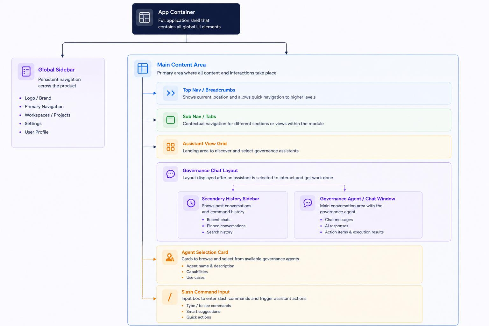

Developer hand off
Detailed specifications, asset links, and component structures required for engineering execution.
Architecture Overview
This document details the expected technical implementation, state management patterns, and CSS architecture to ensure visual consistency between design and code.
NOTE: This document outlines the core design tokens, architecture, and styling guidelines required to translate the design into the frontend implementation for the Project Governance Agent application.
🎨 1. Design Tokens
Colors
Background
#f7f9fa
Primary Accent
#3b82f6
Governance Purple
#8b5cf6
Success Green
#10b981
Warning Yellow
#f59e0b
Destructive Red
#ef4444
Typography
- Font Family:
'Inter', -apple-system, sans-serif - Headings (H1/H2):
1.25rem - 1.75rem, Semi-bold / Bold - Body Text:
1rem (16px), Regular - Small Text/Labels:
0.75rem - 0.85rem, Medium
Shadows & Elevation
- Card Default:
0 1px 3px rgba(0,0,0,0.05) - Hover Elevation:
0 4px 6px rgba(0,0,0,0.05) - Floating Element (Modals):
0 10px 15px -3px rgba(0,0,0,0.1)
Radii & Spacing
- Standard Cards: 12px or 16px
- Small Elements: 6px or 8px
- Input Fields/Pills: 24px (fully rounded)
- Spacing Scale: Micro (4-8px), Base (12-16px), Macro (24-48px)
🏗️ 2. Component Architecture
This section maps the component hierarchy to the React component tree.

Component Guidelines
- Sidebar (Global): 64px fixed width on Desktop. Sticks to left side.
- AssistantView: Centered flexbox for search bar, CSS Grid for agent cards.
- GovernanceChatLayout: Two-pane layout replacing main content area. Secondary sidebar width: 320px.
- GovernanceAgent (Chat Interface):
- User Message: Dark background (
#1e293b), white text, right-aligned. - Agent Message: White background, left-aligned, subtle border.
- Thinking Indicators: Collapsible accordion rows (
ThoughtBadge).
- User Message: Dark background (
🚀 3. Assets & Iconography
Icon Library: lucide-react is used universally.
Sparkles: AI / Agent interventionsCheckCircle2: Task completionAlertCircle: Warnings / Risk
TIP: Ensure you are using lucide-react for all vector assets to maintain stroke-width consistency (default 2px stroke, rounded caps and joins).
💻 4. Development Notes
- State Management: Uses hoisted React state in
App.jsx(projects, tasks, chatSessions). - CSS Methodology: Semantic CSS in
index.cssfor layout structure; inline styles for dynamic sub-components. - Responsiveness: Breakpoints defined at 768px (Tablet) and 480px (Mobile).
×